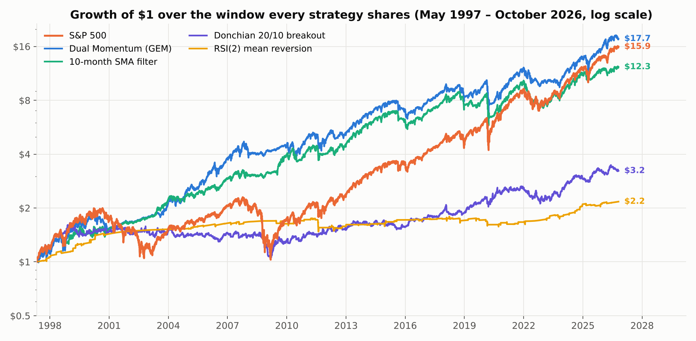
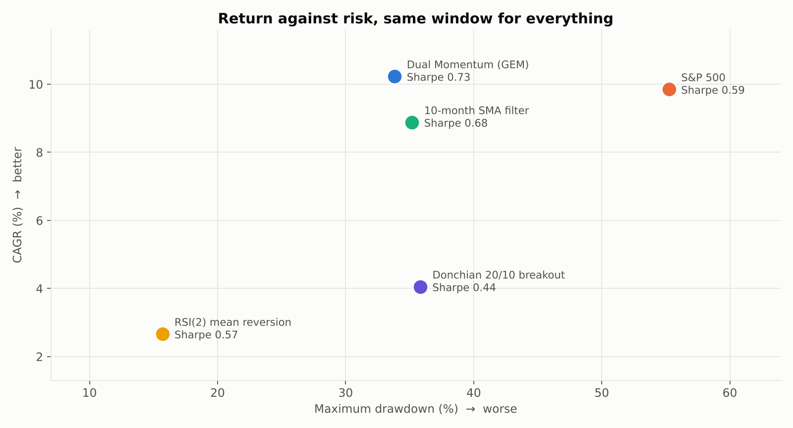

Every strategy, side by side
One engine, one execution model, one cost assumption. Every number here comes straight from the run that produced it, so this page cannot drift from the articles it links to.
| Strategy | CAGR | Sharpe | Max drawdown |
|---|---|---|---|
| Dual Momentum (GEM)trend-following · monthly · 1997–2026 | 10.25% | 0.72 | −33.8% |
| 10-month SMA filtertrend-following · monthly · 1987–2026 | 9.38% | 0.71 | −35.2% |
| Donchian 20/10 breakouttrend-following · daily · 1987–2026 | 5.24% | 0.56 | −35.8% |
| RSI(2) mean reversionmean-reversion · daily · 1987–2026 | 3.62% | 0.79 | −15.7% |
The same window, for everything
The table above measures each strategy over its own history, which is what its article reports. Those histories differ — dual momentum begins in 1997 and the rest in 1987 — so the figures are not strictly comparable with one another. Everything below is recomputed over May 1997 – October 2026, the window all of them share.


| Strategy | CAGR | Sharpe | Max drawdown | $1 became |
|---|---|---|---|---|
| Dual Momentum (GEM) | 10.23% | 0.73 | −33.8% | $17.65 |
| 10-month SMA filter | 8.88% | 0.68 | −35.2% | $12.28 |
| Donchian 20/10 breakout | 4.05% | 0.44 | −35.8% | $3.23 |
| RSI(2) mean reversion | 2.67% | 0.57 | −15.7% | $2.17 |
| S&P 500 | 9.85% | 0.59 | −55.3% | $15.94 |